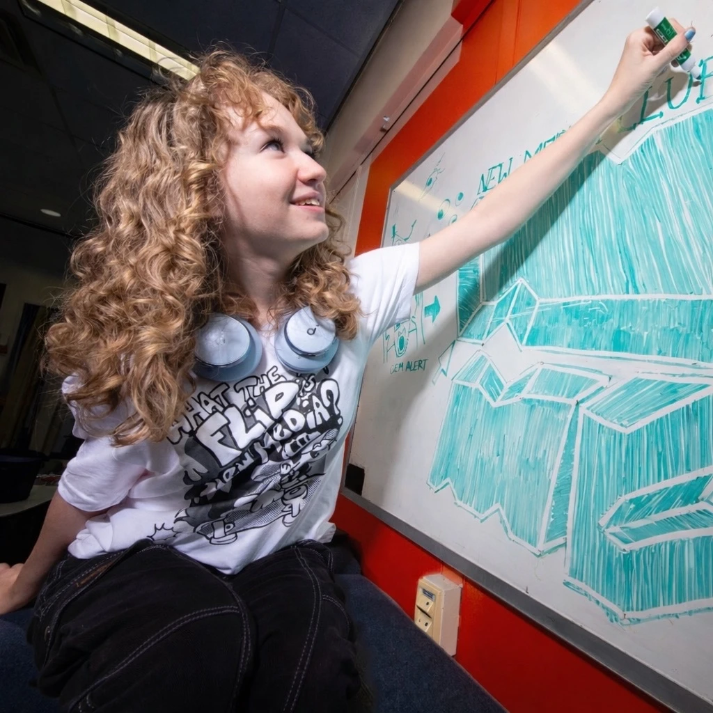

About
me :-)
I’m a senior at Rochester Institute of Technology, graduating in May 2027 with a BFA in New Media Design. I’m passionate about interaction and motion design, and I love bringing my illustration background into both to create thoughtful experiences that blend storytelling and visual design.
I do my best work alongside other creatives, where experimenting and having fun are part of the process. I think good design should be invisible, but great design should be fun!